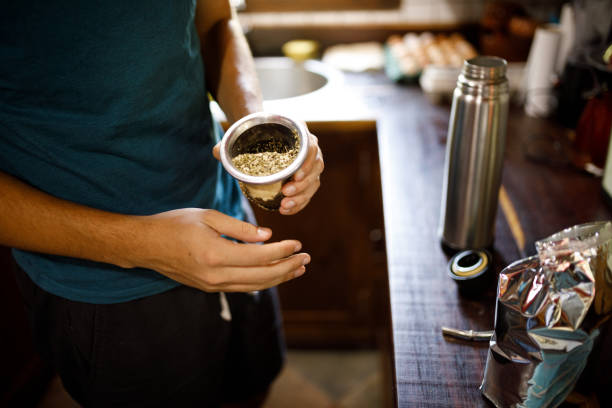
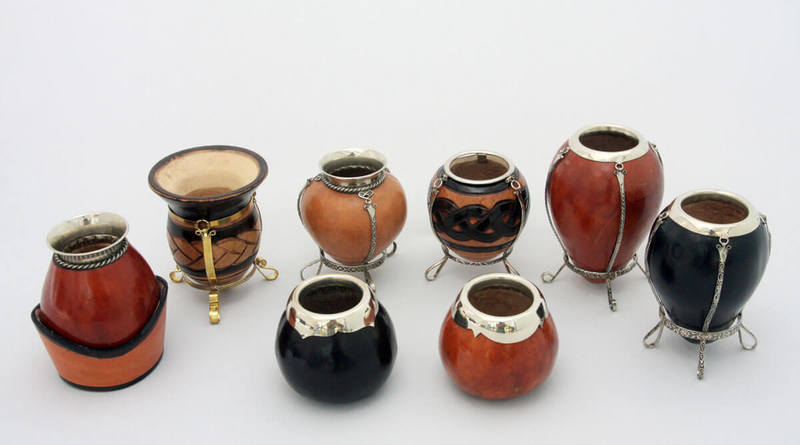

¿Conoces la historia del mate?
¿Sabes como se prepara un buen mate?
Tomarse el tiempo Preparar y tomar mate es una ceremonia, y como tal merece dedicarle tiempo y espacio. El resultado, si empezamos así, siempre será satisfactorio.
Elegir la yerba En la actualidad el mercado ofrece diversidad de marcas y blends de yerba mate, desde sabores suaves hasta los más intensos, con o sin hierbas medicinales, endulzadas o no. Hay para todos y para todas las ocasiones. Temperatura del agua Empezar siempre con agua tibia; lo ideal es empezar a cebar el mate a medida que se calienta el agua. Si utilizamos una pava tradicional, es bueno ir aumentando gradualmente la temperatura y tomando los primeros mates para ir testeando el sabor y temperatura óptima: 75ºC. Esto es para asegurarnos que “no se queme la yerba” y así podamos invitar un rico mate.
Evitar mojar toda la yerba Comenzamos a cebar los mates vertiendo el agua lo más cerca posible de la bombilla para evitar mojar toda la yerba. De esta manera, “el mate rinde más” porque cada vez que volquemos agua al recipiente, la yerba que está seca irá alimentando, liberando, gradualmente, el sabor. En este paso es importante regular la cantidad de agua para evitar mojar toda la yerba. Dicho de otro modo, una cantidad moderada de agua, asegura una mateada más rendidora. Para que se entienda bien: si cebamos mates mojando toda la yerba, los mates van a ser “lavados”. “Lavados” quiere decir mates sin sabor y que hacen necesario cambiar la yerba. El que prepara, toma los primeros mates El que prepara el mate, es quien toma los primeros mates, que son los más amargos y sirven para testear la temperatura justa y sabor. De esta manera sabremos (al tercer o cuarto mate) cuando está bien la temperatura y el sabor, y será el momento de pasarlo al invitado.
Aca podemos ver como se coloca el matea de costado para lograr vertir todo el agua en el centro.
¿Conoces los tipos de mates?
Tipos de mates
Tanto para los argentinos, como para algunos adeptos van apareciendo por el mundo, el mate resulta un compañero indispensable en el día a día.
Se ha extendido tanto su uso que hoy en día existen mates de diversos materiales como metal, vidrio, plástico, como otros materiales más orgánicos como los de madera,
calabaza y hueso. Cada uno posee diferentes características, las cuales pueden influir en el sabor de esta infusión.
Mates de calabaza
Conocidos también como mate porongo o mate poro, es uno de los más tradicionales que existen, ya que gracias a su forma redondeada y la cascara dura que la recubre en el exterior, permiten que sea un excelente recipiente para utilizarlo como mate. Se realizan a partir de la fruta de la calabaza, formando un hueco en su interior para extraer la pulpa y acto seguido ponerlas a secar. Además, suelen ser decoradas artesanalmente para darle un mayor atractivo.
Mates de hueso
Son los confeccionados en cuernos o pezuñas de animales, suelen ser más anchos en la base para poseer un mejor apoyo. Por fuera suelen ser recubiertos con cuero, una capa de metal o plata, decorados con ornamentos o detalles que los vuelven más llamativos.
Mates de madera
Los mates de madera suelen realizarse con maderas de quebracho, palo santo o roble. Cada uno influye en el sabor del mate de diferente manera, por eso mismo se suelen evitar maderas que sean demasiado aromáticas ya que podría afectar al sabor de la infusión. El mate de madera suele aportar una estética rustica, pero con la versatilidad de tener decoraciones muy variadas acorde a los gustos de su portador.
Mates de vidrio
Actualmente es muy común encontrar mates fundidos en vidrio, el cual en la mayoría de los casos resulta ser vidrio reciclado. Su mayor ventaja podría decirse que es que este material no influye en absoluto en el sabor de la infusión, por lo que se puede apreciar mejor el verdadero sabor de la yerba mate.
Mates de metal
Estos recipientes pueden realizarse tanto en plata como acero inoxidable. Estos mates suelen ser muy duraderos gracias a su material, resistente a golpes y caídas tanto como a la corrosión y oxido. Aunque posee una pequeña desventaja debido a que el calor del agua puede aumentar su temperatura, por lo que normalmente se lo suele implementar más para las infusiones frías como el terere.
Mates de plástico
Los mates de plástico son los últimos en incorporarse a esta gran variedad de materiales, actualmente son tendencia gracias a sus colores y las diversas formas tan originales que se pueden conseguir gracias a la maniobrabilidad de este material. Su fabricación suele ser mucho más económica, por lo que estos se consiguen a un precio más accesible. Pero se debe tener en cuenta que para que el plástico no afecte al sabor del mate, se recomienda no utilizar agua demasiado caliente.
Mates de caña
Estos son realizados especialmente con cañas de bambú, las cuales son seleccionadas y pulidas antes de aplicarles una capa de barniz. Esta madera es muy resistente, ya que al crecer en ambientes de temperaturas extremas esto se convierte en una ventaja, permitiéndole resistir muy bien el agua caliente. El sabor que le aportan las cañas de bambú se diferencia mucho del resto, así que te invitamos a probarlo.